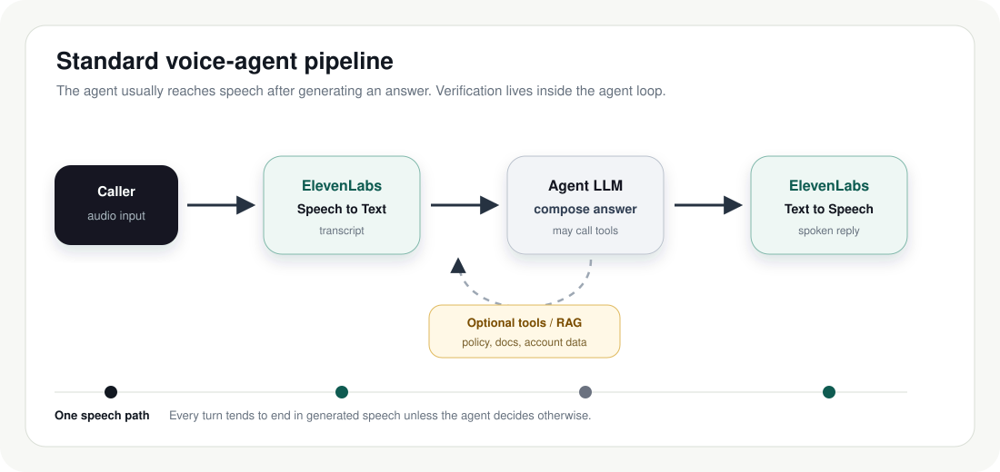
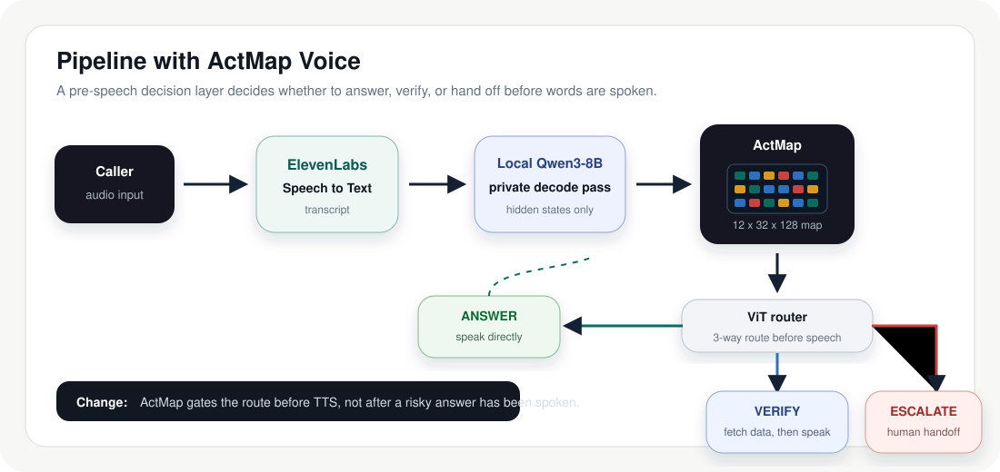
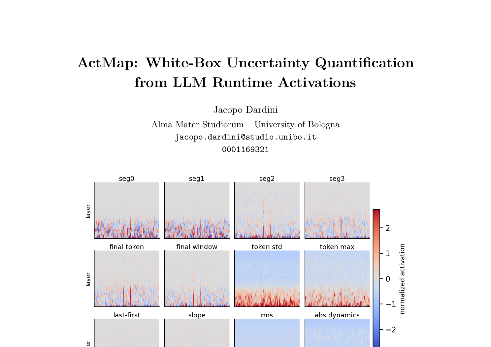

Voice agents should not retrieve documents for every request, and they should not speak from memory when a turn depends on policy, account state, or risk. ActMap reads model activations before speech to choose the right action.
In voice, the wrong route becomes spoken, immediate, and branded. The routing decision has to happen before speech.
Account-specific, pricing, refund, or security questions can sound confident while being wrong.
Always calling RAG or tools slows simple turns and burns cost when the answer is stable.
Human handoff after a risky generated answer is still too late for fraud, legal, and trust issues.
The gap is deciding what happens between transcript and speech.

ActMap routes every transcript before the voice agent speaks.

Hidden states are reshaped into image-like maps and classified by a ViT route head.
12 selected layers x 32 generated tokens x 128 projected features.
The class is not a topic label. It is the operational route the voice agent should take.
"Refund" can be ANSWER when asking where the policy is, VERIFY when asking about eligibility, and ESCALATE when fraud or coercion appears.
Final run on 2,967 Qwen3-8B decode ActMaps with balanced ANSWER, VERIFY, and ESCALATE labels.
Speed is measured for the final classifier step. End-to-end latency still includes STT and the local activation pass.
ActMap catches risky routes and skips unnecessary retrieval for stable answers.
"Is there a newer version of the desktop app available for me?" Text-only LM predicted ANSWER. ActMap predicted VERIFY.
"Do you have a migration guide?" Text-only LM predicted VERIFY. ActMap predicted ANSWER.
ActMap Voice is the voice-agent application of activation-map uncertainty and risk signals from LLM runtime activations.
